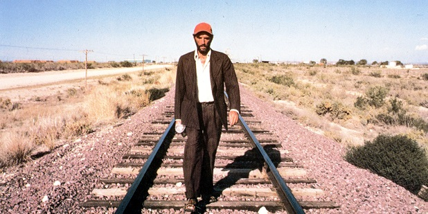
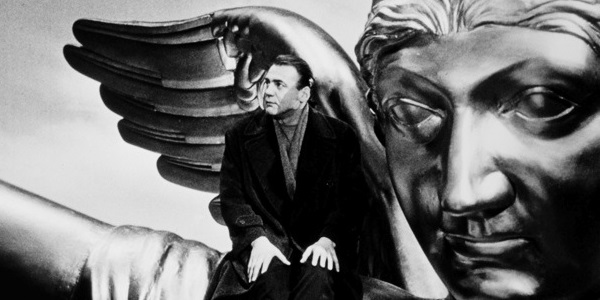

Paris, Texas (1984)
Paris, Texas is considered Wenders' best-known and internationally most successful film. Celebrated by critics, it won a series of important international awards, including the Palme d'Or at Cannes.

Wings of Desire (1987)
Wings of Desire marked Wenders' "homecoming" and was his first German film after eight years in America. The main characters are guardian angels—benevolent, invisible beings in trench coats...